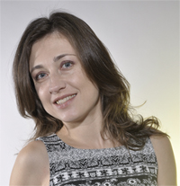

Факултетът e най-голямата и търсена в страната структура за подготовка на бакалаври и магистри в областите: разработване на софтуерни системи, компютърни мрежи и администриране, web технологии и мобилни приложения, съвременни високопроизводителни компютърни архитектури и др. ФКСТ има най-високата възможна акредитационна оценка за провежданото обучение и научна дейност.
Специалностите „Компютърно и софтуерно инженерство” и „Информационни технологии в индустрията“ са най-актуалните и перспективни. Безспорно „Компютърно и софтуерно инженерство” е най-желанатa специалност, ранжирана на първо място в професионалното направление „Комуникационна и компютърна техника” в Рейтинговата система на висшите училища в България. (предвижда се платено обучение).
„Информационни технологии в индустрията“е нова специалност в ТУ – София и дипломираните в нея инженери ще задоволяват и най-претенциозните отрасли на индустрията.
Специалистите, подготвени от ФКСУ, са търсени в широк спектър фирми, предприятия и институции във и извън ИКТ индустрията, както в страната, така и в чужбина. Над 98% от завършилите студенти намират успешна реализация, с много висок осигурителен доход (по данни на Агенцията по заетостта и НОИ).
Топ преподаватели
Проф. дфн. Иван Митев Узунов
НАУЧНА ДЕЙНОСТ: ПУБЛИКАЦИИ:135публикации: 54статиив реферирани научни списания(42от статиите са в западни, и 3 в руски списания) 55доклади в пълен текст на научни конференции 17 абстракти отдоклади на научни конференции 3 научно-приложни разработки 3статии по методика на преподаване 3 научно-популярни статии ЗАБЕЛЯЗАНИ ЦИТИРАНИЯ:465
ЗАЩИТЕНИ ДОКТОРСКИ РАБОТИ ПОД НЕГОВОРЪКОВОДСТВО: 4(2 в Германия и 2 в България)
Доц. д-р инж. Аделина Алексиева-Петрова
Аделина Алексиева-Петрова е заместник декан по иновативни и образователни проекти на Факултет по Компютърни системи и управление при Технически университет-София.
Научни интереси: През последните 10 години доц. Аделина Алексиева е участвала в проектирането и разработката на множество международни и български научни проекти в областта на електронното обучение. Професионалната й ориентация е в областта на електронното и дистанционното обучение, използването на информационните технологии в образованието, разработване на Интернет приложения, семантичен уеб и агент-базираните технологии.
Дисциплини:
Компютърни системи, комплекси и мрежи
проф. д-р Даниела Гоцева
Проф. Гоцева е декан на Факултет по компютърни системи и технологии, Технически Университет – София (ТУ-София) и научен ръководител на Национална професионална гимназия по компютърни технологии и системи – Правец (НПГ по КТС).
Доцент по 02.21.07 „Автоматизирани сиистеми за обработка на информация и управление”
Доктор по 02.21.05 „Системи с изкуствен интелект”
Курсове от текущия семестър:
CSCB547 Microsoft Visual C#.NET
CSCB579 Програмиране на приложения с Microsoft Visual C# .NET
CSCB766 Програмиране с ASP .NET
Нов Български Университет – София
Star Rating
Обучението в програмата през първите две години обхваща общо образование; обучение по основни научни направления в двусеместриални курсове - Математика, Основи на информатиката, Статистика, Електроника, Увод в алгоритмите и програмирането, Основи на правото; практически курсове като - Програмиране на С++, Език за програмиране Java, Компютърни мрежи, Архитектури на компютърни системи, Операционни системи и др.
През третата и четвъртата година обучението се организира в специализирани курсове към програмата и извънаудиторни учебни форми. От третата година програмата предлага два модула, които водят до професионална квалификация.
Завършилите програмата са: специалист по информационни и комуникационни технологии; софтуерни разработчици, проектанти и администратори на бази от данни, разработчици на уеб съдържание, мултимедийни корпоративни приложения.
Топ преподаватели
проф. Иван Ланджев д.н.
Лични данни
15. август 1960 г., гр. Бургас, България Български гражданин женен; две деца
Заемани длъжности
професор Нов Български Университет 10.2004 -
професор Бургаски Свободен Университет 09.2001 - 02.2004
ст.н.с. I ст. ИМИ-БАН 09.2001 - 02.2003
ст.н.с. II ст. ИМИ-БАН 04.1996 - 09.2001
професор University of Salford 09.1998 - 08.1999
ст.н.с. II ст. ИМИ-БАН 04.1996 - 08.1998
н.с. I ст. ИМИ-БАН 06.1995 - 03.1996
гост-професор Michigan Technological University 10.1994 - 05.1995
н.с. III ст. ИМИ-БАН 08.1990 - 10.1994
проф. д-р Марин Маринов
В Нов български университет преподавам Математически анализ; Линейна алгебра; Линейна алгебра и геометрия със система за символно смятане; Математически модели със система за символно смятане, Приложна математика за икономисти и др.
Преподавал съм на студентите от Бургаски свободен университет; Шуменски университет; Югозападен университет ; Технически университет и Софийски университет. Преподавал съм
Математически анализ; Линейна алгебра; Математика; Математическа икономика; Теория на общото икономическо равновесие; Частни диференциални уравнения; Диференциални уравнения; Вариационно смятане; Количествени методи ; Висша математика 1; 2; 3 и др.
Научни интереси: приложна математика; диференциални уравнения и обучение по математика на университетско ниво.
доц. д-р Велина Славова
Образование:
Машинен Инженер, Висш Машинно-Електротехнически Институт, София
Инженер - специалист по приложна математика и информатика, Център за приложна математика при ВМЕИ
Кандидат на техническите науки, ВАК
Специализация по роботика, Ecole Nationale des Mines de Paris
Специализация по когнитивна наука, Нов Български Университет
Доцент по информатика, ВАК
Научни интереси: компютърни мрежи, уеб технологии
Софийски университет „Св. Климент Охридски“
Star Rating
Бакалавърска програма „Компютърни науки“ подготвя специалисти, които с помощта на съвременните постижения в областта на информатиката и информационните и комуникационни технологии могат да решават практически задачи от системен и/или приложен характер. Учебният й план е разработен в съответствие с изискванията, известни като Computing Curriculum 2001 на световните професионални организации ACM и IEEE и осигурява всестранна подготовка на студентите в основните направления на компютърните науки: програмиране, бази от данни, мрежи, хардуерни концепции, съхраняване и извличане на информация, изкуствен интелект, системи за вземане на решения, дизайн и анализ на алгоритми, разработка на нови софтуерни технологии, дизайн на езици за програмиране, среди и средства за програмиране, дизайн на операционни системи.
Сериозно внимание се отделя и на математическите дисциплини, свързани с компютърните науки: дискретна математика, теория на формалните езици, теория на алгоритмите, кодиране на данни, алгебра, геометрия, математически анализ, числен анализ, вероятности и статистика.
Чрез различни практикуми и възможност за стажуване в софтуерни фирми, се създават условия за максимално приближаване на студентите до същността и проблемите на бъдещата им работа.
Завършилите успешно тази програма могат да се реализират като: софтуерни специалисти в компютърни телекомуникационни, инженерни, финансови, застрахователни фирми и научни институти; като преподаватели по информатика във висши училища, научни работници и др.
Топ преподаватели
Азнив Киркор Каспарян
Професор
Доктор
Научни интереси: Алгебрична геометрия
Дисциплини:
Алгебра I - спец. Компютърни науки, I курс, II поток
Линейна алгебра - спец. Математика и Приложна математика, I курс
Увод в комутативната алгебра - избираема дисциплина за бакалаври и магистри
Хомологична алгебра - избираема дисциплина за магистри
Александра Андреева Соскова
Професор
Доктор на науките
Образование и научни степени:
1974 - 1979: Магистър по математическа логика, Факултет по математика и информатика, СУ "Св. Климент Охридски"
1986 - 1989: Доктор, Факултет по математика и информатика, СУ "Св. Климент Охридски"
Научни интереси: Теория на рекурсията
Номерационни степени
Спектри от структури
Изчислимост в абстрактни структури
Теоретична информатика

Десислава Георгиева Петрова-Антонова
Доцент
Доктор
Образование и научни степени: 2000 - Технически университет-София, ФКСУ - Инженер по компютърни системи
Научни интереси: Архитектури, ориентирани към услуги (SOA) и уеб услуги
Тестване на софтуерни системи
Интеграция и оперативна съвместимост на данни
Големи данни
Университет по библиотекознание и ИТ
Star Rating
Целта на обучението е да подготви бакалаври в областта на информационните технологии, притежаващи теоретична и практическа подготовка. Изучават се задължителните дисциплини като информационни системи, системен анализ, бази данни и автоматизирано обслужване, организация, управление, обработка и използване на информационните ресурси, компютърни мрежи и комуникации, информационно и стандартизационно осигуряване и приложение на информационните технологии в бизнеса, администрацията и науката, информационна политика, информационен мениджмънт, защита на информацията и на интелектуалната собственост.
Студентите имат възможност да избират дисциплини съобразно своите интереси в областта на обектно ориентираното програмиране, контент мениджмънт системите, софтуерната ергономия и др.
Студентите получават общообразователна подготовка по математика, информатика, статистика, бизнес психология, философия, политология и др.
Завършилите успешно бакалавърската програма по информационни технологии могат да работят като аналитични и приложни специалисти по разработването, поддържането и управлението на информационни системи в сферата на науката, администрацията и бизнеса.
След завършване на обучението бакалаврите по ИТ могат да продължат образованието си в магистърски програми в УниБИТ и в други висши училища в страната и в чужбина.
Топ преподаватели
Асен Йорданов Захариев
Доцент, Факултет по Информационни науки (Университет по библиотекознание и информационни технологии)
Доцент, Институт по информационни и комуникационни технологии - БАН
Доцент, Факултет по Информационни науки (Университет по библиотекознание и информационни технологии)
1979 – 1987 Институт по водни проблеми – БАН
1987 – ... ИИКТ (КЦИИТ, ЦЛПОИ, ИПОИ) – БАН
1987 – ... по съвместителство и на хонорар в СУ, ТУ-София, ЮЗУ-Благоевград, БСУ-Бургас
Дългосрочни специализации в чужбина: Белгия (1 г.),
Италия (1.5 г)
Ръководител и участник в множество международни и национални научни проекти
Боян Колев Жеков
Доцент, Факултет по Информационни науки (Университет по библиотекознание и информационни технологии)
Професионален опит: 2016 - Университет по библиотекознание и информационни технологии /УНИБИТ/, преподавател
2014 – 2015 Министерство на образованието и науката МОН, Главен експерт, дирекция „Наука“
2011 – 2014 Ен-Би-Ейч, ООД, Управител,
2010 – 2011 Българска стопанска камара /БСК/, експерт ИКТ
2010 – 2010 Българска асоциация по информационни технологии/БАИТ/, Мениджър проекти
2009 – ДЖАЙКА Алумни в България, Председател на УС
2005 – 2009 Координационен център за информационни, комуникационни и управленски технологии към Министерския съвет и UNDP, консултант по Е-управление
1998 – 2004 АСК реклама и ПР обслужване; мениджър ИКТ проекти и клиенти
1993 – 1998 Технически университет София, проекти TEMPUS; мултимедии, ИКТ за МСП